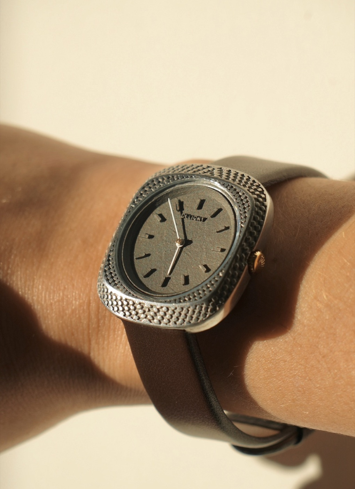
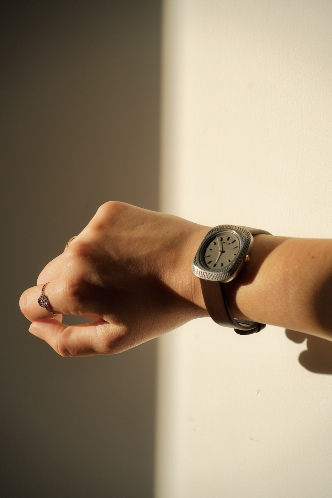
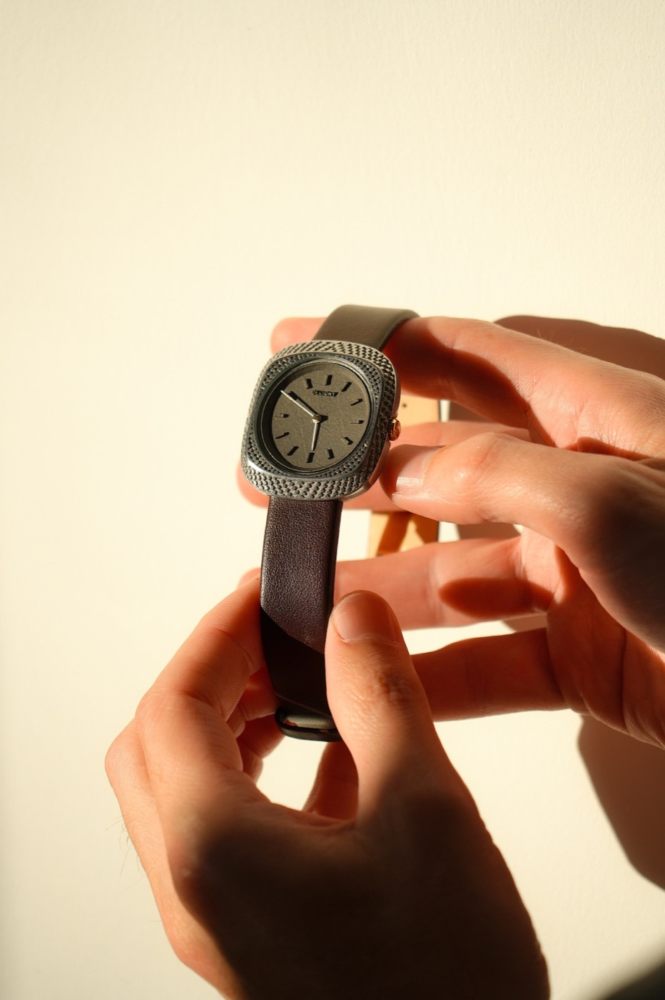

Planche 01 · Horlogerie
Paterne
Paterne est une montre personnalisable conçue pour la fabrication additive. Dans sa configuration présentée ici, le boîtier est imprimé en aluminium, puis son relief est poli à la main. Le cadran en titane conserve sa finition brute. Le mouvement est suisse et le bracelet est réalisé dans une matière biosourcée à base de fibres de pomme recyclées. Le bouton « Aléatoire » du configurateur permet de découvrir différentes combinaisons avant de composer la vôtre.
Assemblée à la main à Paris.



Démo